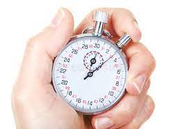
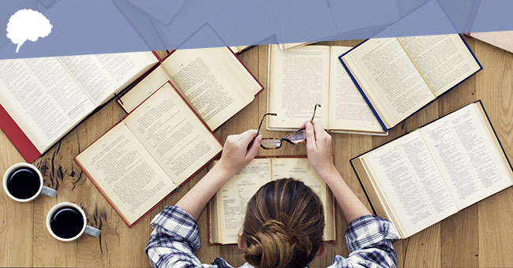

Een aantal tips die we zouden geven aan ouders zijn:

• Stel samen regels vast over het gamen, hoeveel, wanneer, en wat moet er eerst gedaan worden.
• Controleer of het huiswerk af is en of het op school goed gaat. Ga in gesprek erover.
• Blijf je kind meenemen naar verjaardagen en andere familiebezoeken.
• Motiveer je kind om te sporten.
• Verdiep je zelf in de hobby zodat je een beter begrip hebt van waarom je kind verslaafd is, en als je het beter begrijpt staan je kinderen waarschijnlijk ook meer open voor een gesprek over gamen.
• Leer het verschil tussen games, in online spellen heb je meestal rondes en potjes, spreek met je kind af dat ze nog een potje mogen spelen en dat ze daarna moeten stoppen.
Met andere spellen die eindeloos doorgaan kun je beter afspreken dat ze over bijvoorbeeld een halfuur moeten stoppen.
Blijf hierover streng.
• Vertel je kind van tevoren dat de tijd bijna op is, het is als kind vervelender om te horen dat je meteen moet stoppen, dan dat je 10 minuten van tevoren al weet dat de tijd bijna op is.

Als ouder kan je je kind meegeven dat er niets mis is met soms gamen, maar dat het niet teveel moet en dat andere dingen voorrang hebben.
Maak je huiswerk en doe je best op school, hou je hygiëne in orde en spreek af en toe af met vrienden.
